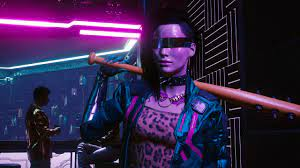

Action-packed RPG will include dialogue in ten languages as well as subtitles in several more. By using artificial
intelligence to lip sync conversation in several languages, CD Projekt Red hopes to create a deeper degree of immersion
for gamers.
Mateusz Popawski, the game's lead character technical director, stated in a presentation that CDPR aimed for greater lip
sync quality than it is in the Witcher 3. It intended to do so in ten other languages: English, German, Spanish, French,
Italian, Polish, Brazilian Portuguese, Russian, Mandarin, and Japanese.

The goal was to accomplish all of this for each and every character in the open world. Due to the overall game's massive scale,
CDPR had to complete everything with no facial motion capture. To do this, the company used Jali Research's lip syncing and facial
movement technology to determine how the characters' faces move procedurally.
A few of the characters in Cyberpunk 2077 speak a different language, shifting in them at times within the same statement.
Transcript tagging was employed to adjust for this. When a character's emotion altered within a line of conversation, the
labels also helped to adapt their facial expressions. In addition, audio analysis was used by the system to mimic the feelings
of a vocal performance in the animations.
In The Witcher 3, CDPR employed algorithms to help them animate the cutscenes, and it's an advancement of that method. Many
videogames use motion capture to lip sync dialogue in only one language, which might disrupt realism for players who change
languages.
While the shuffled animations in Cyberpunk 2077 may not have been as detailed or descriptive as those in other AAA games, they may
improve the experience for many gamers who choose to engage in many languages.
Cyberpunk 2077 is among the most exciting games of the year, and it is aiming to be one of the year's biggest titles. This,
however, means that Cyberpunk 2077 will include thousands of lines of conversation, dozens of distinct spoken characters, and a
diverse range of personalities and speech styles. Furthermore, CD Projekt RED reportedly set out with the goal of outperforming
The Witcher 3 in terms of lip-sync quality, as well as supporting at least ten languages with native localization. Because
traditional face motion capture was ineffective, they sought an alternative patch. JALI is an AI programme that can analyse and
animate lip-sync and facial animations programmatically.
JALI is a "animator-centric viseme model for expressive lip synchronisation," which means that it deconstructs face animation
into basic components such as speech, speech style, eyes, brows, emotion, and head and neck movements. It can manage lip-sync
as well as full emotional expression, including movement of various regions of the face, resulting in performances that seem
authentic and powerful without the need for animation. It looks fantastic and will be utilised by every single voiced character
in the universe.
Even better, because JALI can analyse and interpret numerous languages and dictations, Cyberpunk 2077 will feature native language
localization for ten languages, including French, Spanish, Japanese, German, and others, simply by exploiting JALI's innovative power.
The video above is a little long, but it has a lot of interesting information on the technology being utilised here, as well as
examples to demonstrate it. If JALI is consistent throughout the game, Cyberpunk 2077's lip-sync should be really impressive and
blend into the background.
The month-long countdown to Cyberpunk 2077 has begun, with the game recently going gold ahead of its November 19, 2020 release date.